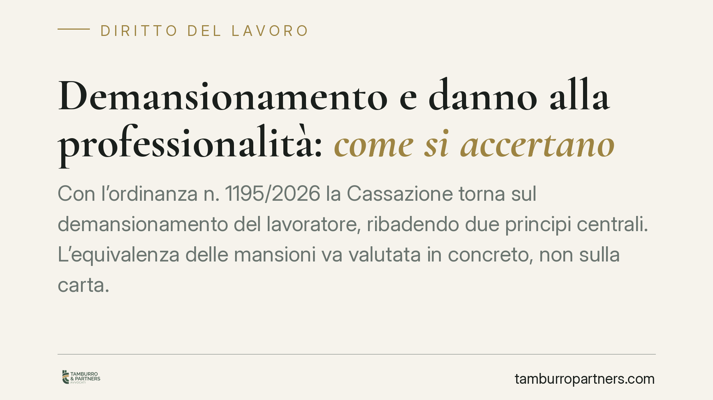

Demansionamento e danno alla professionalità: come si accertano
Con l'ordinanza n. 1195/2026 la Cassazione torna sul demansionamento del lavoratore, ribadendo due principi centrali. L'equivalenza delle mansioni va valutata in concreto, non sulla carta. E il danno alla professionalità può essere dimostrato con presunzioni e liquidato in via equitativa. Vediamo cosa cambia per chi subisce uno svilimento professionale e come muoversi.

Il caso
Un quadro direttivo di un istituto di credito lamentava un demansionamento: mansioni ridotte, svuotamento di responsabilità, perdita del ruolo tecnico e organizzativo acquisito. La Cassazione, Sezione Lavoro, con l'ordinanza n. 1195 del 20 gennaio 2026, ha confermato l'impianto accolto nei gradi di merito.
La decisione non introduce principi nuovi, ma consolida un orientamento utile a chi si trova in situazioni analoghe.
Inquadramento normativo
La norma di riferimento è l'art. 2103 del codice civile, come riscritto dal D.lgs. 81/2015. Il datore può assegnare il lavoratore a mansioni riconducibili allo stesso livello e categoria legale di inquadramento delle ultime effettivamente svolte. In parole semplici: si può cambiare compito, ma non si può retrocedere il lavoratore a un ruolo inferiore rispetto a quello raggiunto.
Il "livello" non basta a garantire la legittimità dello spostamento. La Cassazione chiarisce che l'equivalenza va accertata in concreto: occorre verificare se le nuove mansioni consentono di utilizzare e accrescere il patrimonio professionale del lavoratore, oppure lo mortificano. Un inquadramento formalmente identico può nascondere un demansionamento sostanziale.
Nel caso specifico rileva anche l'art. 82 del CCNL del settore credito, che declina in dettaglio i profili professionali del comparto e aiuta a stabilire cosa sia realmente equivalente.
Come si prova il demansionamento
L'accertamento è fattuale. Il giudice confronta le mansioni svolte prima e dopo lo spostamento, guardando a contenuto, autonomia, responsabilità, competenze richieste. Non conta l'etichetta contrattuale, ma l'attività reale.
La prova grava sul lavoratore, che deve descrivere in modo puntuale il ruolo precedente e quello attuale, evidenziando lo svilimento. Sono utili organigrammi, ordini di servizio, e-mail, testimonianze di colleghi, documenti che fotografino il perimetro delle responsabilità.
Il danno alla professionalità
Qui sta il passaggio più rilevante dell'ordinanza. Il demansionamento non comporta un danno automatico: il pregiudizio va allegato e provato. Ma la prova può essere raggiunta per presunzioni.
Significa che il lavoratore non deve necessariamente esibire una prova diretta della perdita subita. Può indicare elementi indiziari — durata del demansionamento, natura e gravità della dequalificazione, età, anzianità, posizione ricoperta — da cui il giudice risale, con ragionamento logico, all'esistenza del danno.
Quando il danno è accertato ma non quantificabile con precisione, la liquidazione avviene in via equitativa, cioè con una valutazione ragionevole affidata al giudice ai sensi dell'art. 1226 c.c. Un lungo demansionamento di un quadro con elevata qualificazione pesa più di un episodio breve e marginale.
Implicazioni pratiche
Per il lavoratore la strada è percorribile ma non scontata. Non è sufficiente sentirsi sminuiti: serve costruire un quadro probatorio ordinato che mostri il prima e il dopo.
Per il datore di lavoro, il messaggio è speculare. Una riorganizzazione può essere legittima, ma deve rispettare il patrimonio professionale del dipendente. Spostamenti mascherati da esigenze organizzative, ma privi di reale equivalenza, espongono a responsabilità.
Attenzione anche ai tempi. Il danno cresce con la durata: intervenire presto, anche con una diffida, contribuisce a limitare il pregiudizio e a documentarne l'inizio.
Cosa fare in concreto
- Documentate il ruolo precedente: raccogliete mansionari, ordini di servizio, e-mail, deleghe e ogni elemento che descriva responsabilità e autonomia effettive.
- Fotografate il cambiamento: annotate date, comunicazioni aziendali e differenze concrete tra le vecchie e le nuove mansioni.
- Verificate il CCNL applicabile: controllate i profili professionali del vostro comparto per valutare la reale equivalenza.
- Agite tempestivamente: una contestazione scritta al datore fissa l'inizio del demansionamento e frena l'aggravarsi del danno.
- Consultate un professionista prima di formalizzare rivendicazioni o rinunce: la valutazione dell'equivalenza è tecnica e caso per caso.
Conclusione
L'ordinanza n. 1195/2026 ribadisce un equilibrio: nessun automatismo, ma un accertamento sostanziale e strumenti probatori accessibili. Il lavoratore che subisce uno svilimento professionale non è privo di tutela, purché sappia costruire per tempo la propria posizione.
---
*Contributo informativo a cura di Tamburro & Partners - Avv. Giuseppe Tamburro. Non costituisce parere legale.*
Ogni storia di lavoro ha i suoi tempi.
Se gestisci HR e vuoi un confronto su contenzioso, ispezioni o licenziamenti, scrivi allo studio. Ti rispondiamo entro un giorno lavorativo.